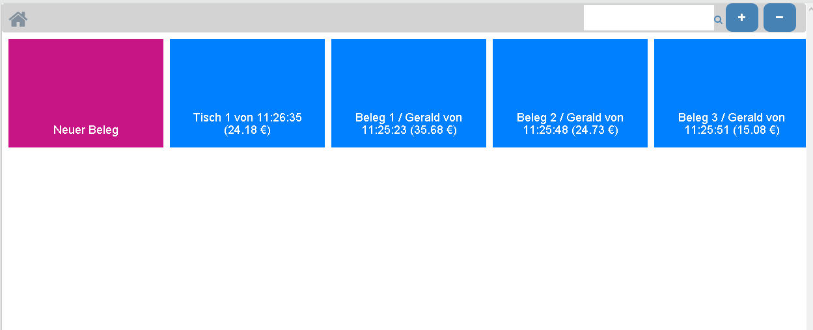
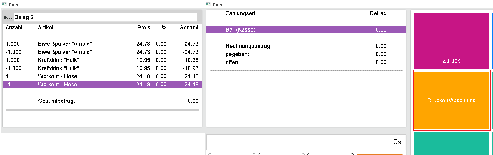

Wenn bei einem Beleg die Vorschau ausgegeben wird, ein Belegwechsel durchgeführt wird oder die Kasse geschlossen wird, wird dieser Beleg gespeichert und bei den geparkten Belegen (Belegwechsel) abgelegt. Bei den geparkten Belegen ist der Belegname, die Uhrzeit, welcher Benutzer diesen Beleg zuletzt bearbeitet hat und der Kunde (wenn ein Kundenwechsel durchgeführt wurde) sichtbar. Beim erneuten Öffnen der Kasse können diese Belege als geparkte Belege wieder angezeigt und weiter bearbeitet werden. Die Anzahl der geparkten Belege sind beim Button Belegwechsel als zahl sichtbar.


Wenn ein anderer Benutzer gerade einen Beleg bearbeitet, wird dieser Beleg als rote Kachel bei den geparkten Belegen dargestellt. In der Zeit der Bearbeitung kann kein anderer Benutzer diesen Beleg aufrufen, versucht man jedoch diesen Beleg aufzurufen, wird eine Meldung angezeigt, dass dieser Beleg gerade in Bearbeitung ist.

Wenn die Vorschau bereits gedruckt wurde können die Artikelzeilen nur noch mit Minusmengen storniert werden und nicht komplett entfernt werden. Um diesen Beleg abzuschließen/entfernen muss der Beleg als 0 Rechnung abgeschlossen werden.

Wenn noch keine Vorschau gedruckt wurde, kann per Button Zeilenstorno alle Zeilen storniert werden. Wenn dann mit diesem leeren Beleg der Button Belegwechsel gedrückt wird, kann entschieden werden, ob dieser gelöscht werden soll oder als leerer Beleg wieder geparkt werden soll bzw. immer gelöscht werden soll, ohne das noch einmal danach gefragt werden soll.

Im Zusammenhang mit dem Belegwechsel wurde das Belegmanagement um die Selektion "Kassenbeleg" erweitert. Wenn diese Option aktiviert ist, werden alle derzeit geparkten Belege angezeigt und können per Beleginfo als Vorschau angezeigt werden.